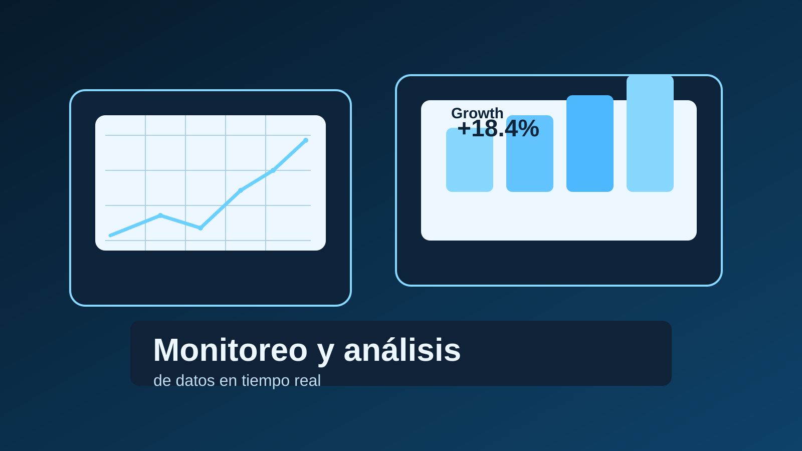
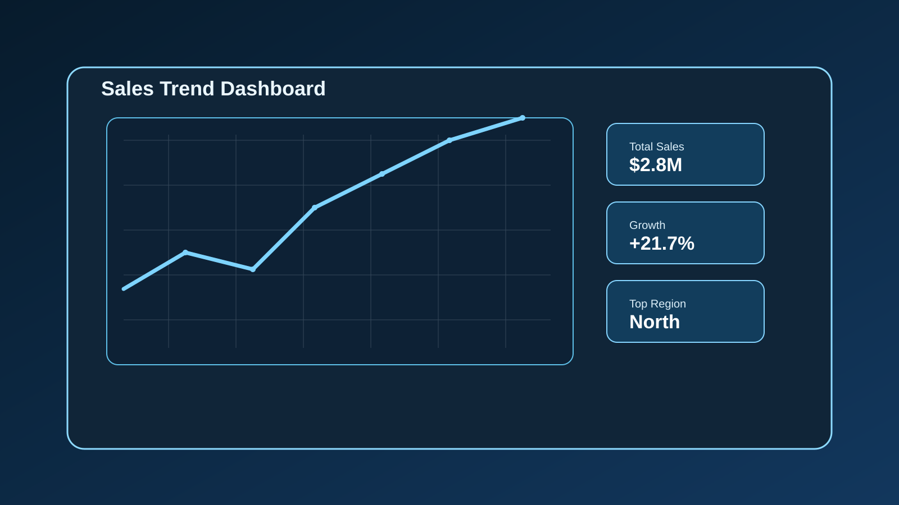
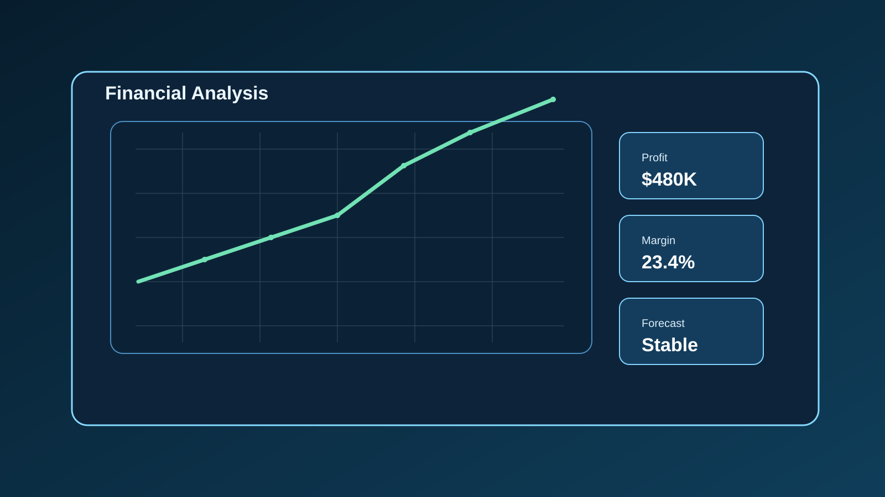
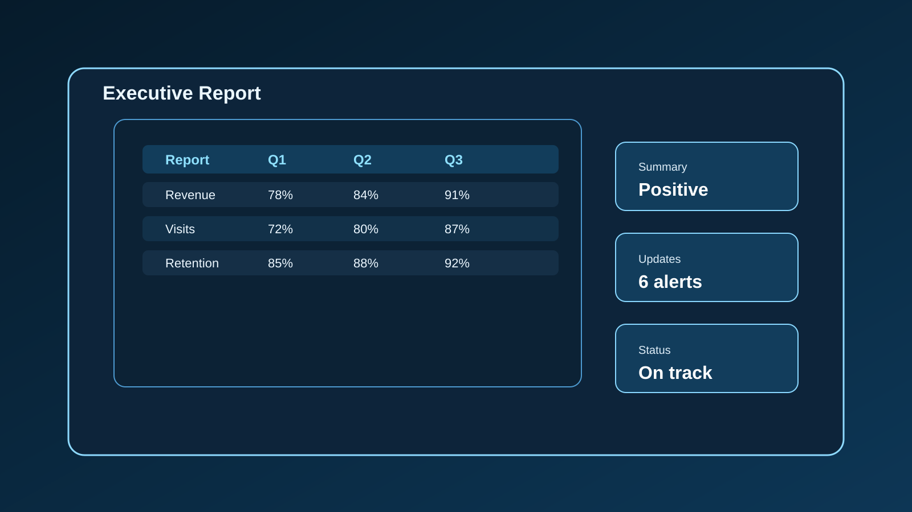

ANALÍTICA · REPORTES · CRECIMIENTO
De los números
a la decisión con claridad.
Soy Sheila y mi camino se mueve entre finanzas, reportes y análisis de datos. Hoy llevo esa experiencia a un enfoque más estratégico: transformar información en historias útiles y decisiones mejor fundamentadas.
y aprendizaje continuo en data

Insight. Acción.
comunicar con claridad.
01 — TRABAJO SELECCIONADO
Proyectos que dan
sentido a los datos.

Ventas con una nueva perspectiva
De registros dispersos a preguntas que orientan el análisis.

Entender el movimiento financiero
Una mirada ordenada a variaciones, tendencias y contexto.

Reportes que se dejan leer
La información adecuada, organizada para facilitar su lectura.
Casos de estudio para mostrar el enfoque de análisis; no representan información confidencial ni resultados de clientes.
02 — DE DÓNDE VENGO
Una base financiera.
Una mirada analítica.
Durante años he trabajado con reportes, métricas y datos financieros. Hoy llevo esa experiencia hacia una visión más analítica y estratégica: entender la historia detrás de cada cifra y comunicarla con claridad.
Más sobre míEN INFORMACIÓN FINANCIERAEN TRANSICIÓN
HACIA DATA ANALYTICS
03 — NOTAS Y APRENDIZAJES
Aprender en público
también genera valor.
Exploro SQL, visualización y análisis de negocio para convertir la curiosidad en herramientas útiles y decisiones más informadas.
Leer los artículos
¿HABLAMOS?